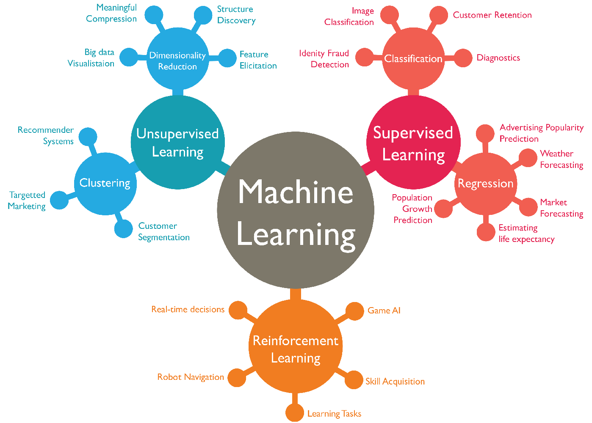
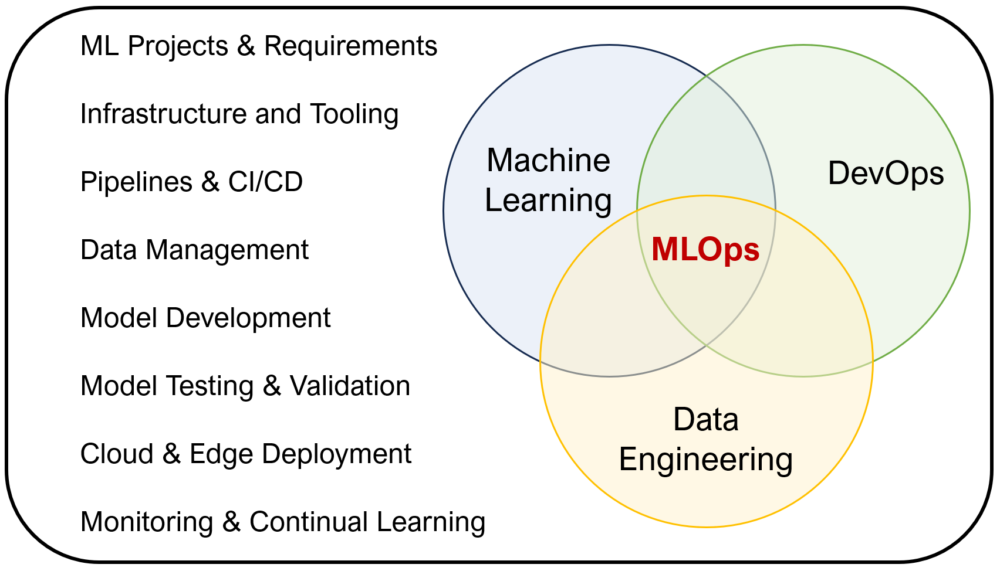
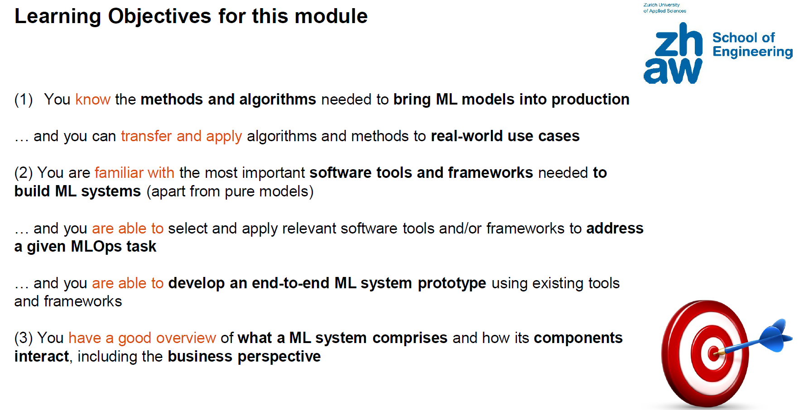
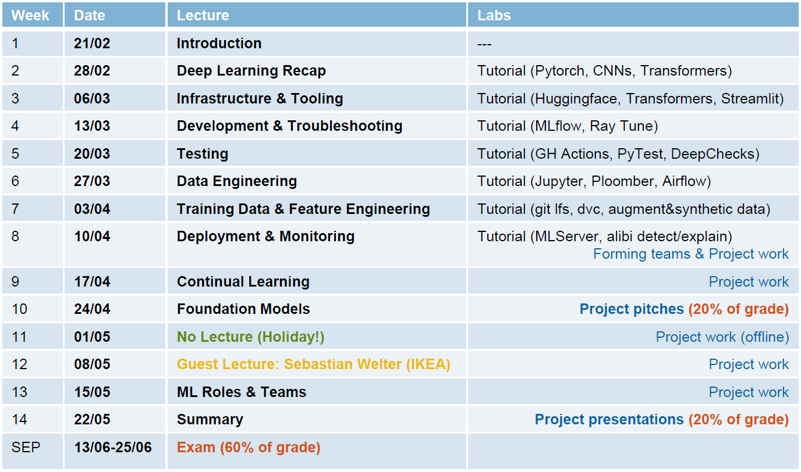
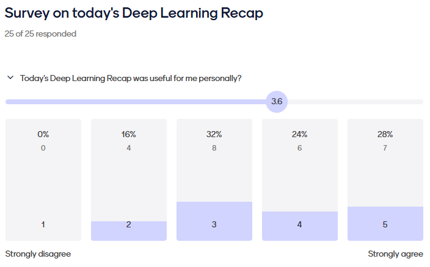
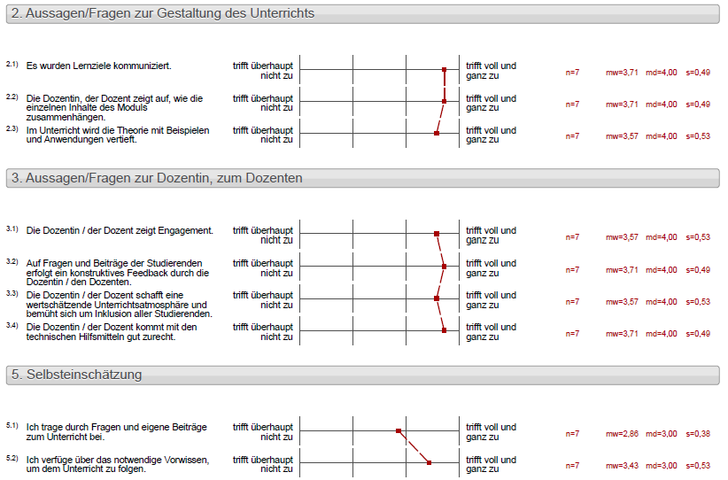
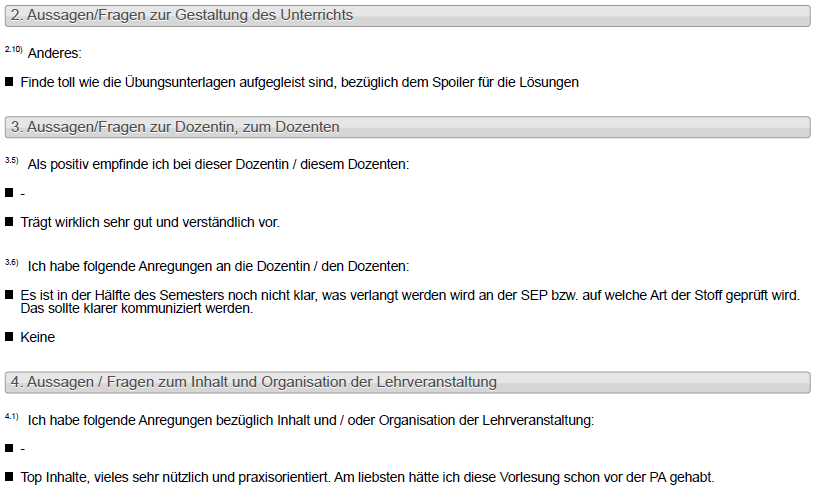
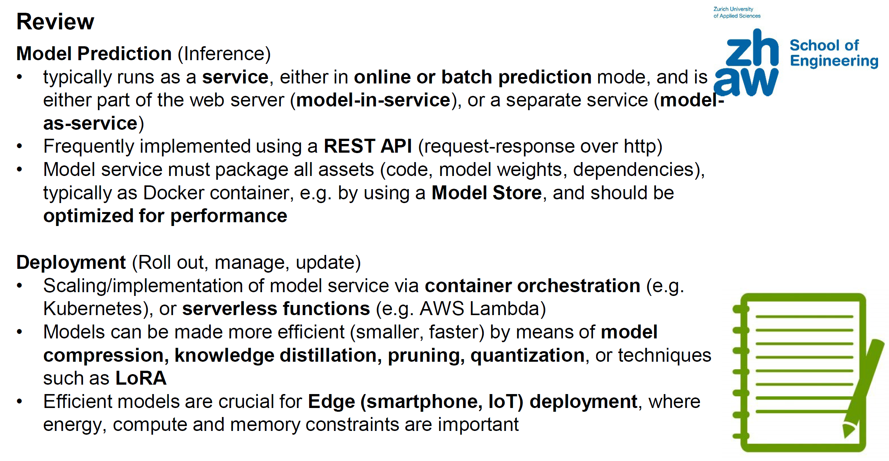

Entwicklung eines Wahlpflichtmoduls “Machine Learning Operations (MLOps)” für IT-nahe Studiengänge an einer Hochschule für Angewandte Wissenschaften
Einleitung
MLOps ist ein Wahlpflichtmodul (4 ECTS) im letzten Jahr des Bachelorstudiums in den Studiengängen Informatik (IT) und Data Science (DS) an der School of Engineering der ZHAW. Es wird im FS 2024 erstmalig durchgeführt. Ich selbst bin der Modulverantwortliche und führe den Unterricht durch.
Inhaltlich richtet sich das Modul an Studierende, welche bereits in anderen Modulen Grundkenntnisse und Fähigkeiten zum Thema Machine Learning erworben haben, beispielsweise in den bereits etablierten Modulen “Artificial Intelligence I” oder “Machine Learning & Data Mining I”
Das Thema MLOps ist sowohl brandneu als auch hoch relevant. Das neu aufgebaute Modul ist damit eines der Ersten oder sogar das Erste in der Schweiz zu diesem Thema.
Im folgenden werden einige Aspekte im Zusammenhang mit dem Neuaufbau und dem Erstmaligen Unterrichten dieses Moduls diskutiert.
Decoding the Disciplines
MLOps ist eine sehr junge Disziplin, die zum einen technisch sehr schnelllebig ist (zu verwendende Tools, Software und Frameworks), und zum anderen keinen klaren theoretisch-methodischen Unterbau (Theorie) hat. Auf der anderen Seite gibt es eine sehr hohe Praxisrelevanz der behandelten Themen. Daher ist es sehr wichtig, ein Decoding des MLOps Themas mit entsprechendem Mapping auf eine BSc-Lehrveranstaltung durchzuführen.
Machine Learning
Maschinelles Lernen, auch bekannt als Machine Learning (Mitchell, 1997), ist ein Bereich der künstlichen Intelligenz (KI), der sich darauf konzentriert, Algorithmen zu entwickeln, die es Computern ermöglichen, aus Daten zu lernen und Muster oder Zusammenhänge zu erkennen, ohne explizit programmiert zu werden. Im Wesentlichen geht es darum, mathematische Modelle zu erstellen, die es Computern ermöglichen, Entscheidungen zu treffen oder Vorhersagen zu treffen, basierend auf den Daten, die ihnen präsentiert werden. Das Machine Learning hat in den letzten Jahren enorm an Bedeutung gewonnen und findet heute breite Anwendung in verschiedenen Bereichen wie der Bilderkennung, Sprachverarbeitung, medizinischen Diagnose, Finanzanalyse und vielem mehr.

Der Schlüssel zum Erfolg im maschinellen Lernen liegt oft darin, große Mengen an qualitativ hochwertigen Daten zu sammeln, die dann zum Trainieren der Modelle verwendet werden. Diese Modelle werden mit Algorithmen trainiert, die es ihnen ermöglichen, Muster zu erkennen und Vorhersagen zu treffen. Mit der zunehmenden Verfügbarkeit von Rechenleistung und Daten ist das Potenzial des maschinellen Lernens enorm gewachsen.
Der Hauptunterschied zwischen maschinellem Lernen und konventionellen Software-Algorithmen liegt in ihrer Funktionsweise und ihrem Anwendungsbereich. Konventionelle Algorithmen basieren in der Regel auf festen Regeln und Anweisungen, die von Entwicklern programmiert werden, um spezifische Aufgaben auszuführen. Diese Algorithmen sind deterministisch (d.h. fest “verdrahtet”) und geben für dieselben Eingaben immer dieselben Ausgaben aus. Man spricht hier auch von “Software 1.0” (Karpathy, 2017).
Im Gegensatz dazu ermöglicht maschinelles Lernen Computern, aus Daten zu lernen und Muster oder Zusammenhänge eigenständig zu erkennen, ohne dass sie explizit programmiert werden müssen. Statt fester Regeln werden mathematische Modelle erstellt und mit Algorithmen trainiert, um aus den Daten zu lernen und Vorhersagen zu treffen. Laut Karpathy (2017) handelt sich bei ML Verfahren um “Software 2.0”, bei mittels eines Optimierungsverfahrens der Trainings-Datensatz zu einem gelernten Modell übersetzt (“compiliert”) wird.
Beim sog. “supervised learning (überwachtes Lernen) wird ein Modell auf einem mit “Labeln” versehenen Datensatz trainiert, wobei es lernt, die Ergebnisse (=Labels) auf der Grundlage von Input-Merkmale vorherzusagen, was üblicherweise für Aufgaben wie Klassifizierung und Regression verwendet wird. Unsupervised learning (unüberwachtes Lernen) hingegen beinhaltet das Training ohne mit Labeln versehene Daten und konzentriert sich auf die Aufdeckung von Mustern oder Strukturen innerhalb des Datensatzes, was häufig für Clustering oder Dimensionalitätsreduzierung verwendet wird. Beim Reinforcement Learning (bestärkendes Lernen) lernt ein Agent, sequenzielle Entscheidungen zu treffen, indem er mit einer Umgebung interagiert und Feedback in Form eines positiven oder negativen Rewards erhält, was typischerweise in Szenarien angewandt wird, in denen der Agent seine Aktionen im Laufe der Zeit optimieren muss, wie z. B. bei Games oder in der Robotik. Jeder dieser Drei Ansätze spielt beim maschinellen Lernen eine andere Rolle und ist auf unterschiedliche Datentypen und Problemlösungskontexte zugeschnitten.
Deep Learning ist ein Teilbereich des maschinellen Lernens, bei dem neuronale Netze mit mehreren Schichten eingesetzt werden, um automatisch komplizierte Muster und Merkmale aus großen Datenmengen zu extrahieren. Im Gegensatz zu herkömmlichen Ansätzen des maschinellen Lernens können Deep-Learning-Modelle eigenständig Repräsentationen von Daten durch hierarchische Schichten erlernen, was ein hochkomplexes und abstraktes Lernen ermöglicht. Diese Technik hat in verschiedenen Bereichen wie dem maschinellen Sehen (computer vision), der Verarbeitung natürlicher Sprache (natural language processing, NLP) und der Spracherkennung bemerkenswerte Erfolge erzielt und die Möglichkeiten von Systemen der KI revolutioniert.
Machine Learning Operations (MLOps)
Machine Learning Operations (MLOps) umfasst eine Reihe von Tools und Methoden/Konzepten (“best practices”) für die Einführung von Machine Learning (ML) in eine produktive Umgebung (Breuel, 2020; Kreuzberger, 2023). Der neue und sich schnell entwickelnde Bereich MLOps ist vom DevOps-Konzept (Development und Operations) inspiriert, um Methoden, bewährte Verfahren und Werkzeuge für die Operationalisierung eines ML-Systems zu entwickeln, d. h. es in Produktion zu bringen.

DevOps (Halstenberg, 2020) wiederum ist eine Sammlung unterschiedlicher technischer Methoden und eine Kultur zur Zusammenarbeit zwischen Softwareentwicklung und IT-Betrieb. DevOps ist ein Kofferwort aus den Begriffen Development (Entwicklung) und IT Operations (Betrieb).
Wikipedia (https://en.wikipedia.org/wiki/MLOps) definiert MLOps wie folgt
MLOps is a paradigm, including aspects like best practices, sets of concepts, as well as a development culture when it comes to the end-to-end conceptualization, implementation, monitoring, deployment, and scalability of machine learning products. Most of all, it is an engineering practice that leverages three contributing disciplines: machine learning, software engineering (especially DevOps), and data engineering. MLOps is aimed at productionizing machine learning systems by bridging the gap between development (Dev) and operations (Ops). Essentially, MLOps aims to facilitate the creation of machine learning products by leveraging these principles: CI/CD automation, workflow orchestration, reproducibility; versioning of data, model, and code; collaboration; continuous ML training and evaluation; ML metadata tracking and logging; continuous monitoring; and feedback loops.
Das bedeutet, dass man, ausgehend von einem ML-Modell (z. B. einem neuronalen Netz), welches auf einem bestimmten Datensatz trainiert wurde, um ein bestimmtes Problem zu lösen, alle zusätzlichen Komponenten und Arbeitsabläufe, die erforderlich sind, um ML in der Praxis erfolgreich einzusetzen und zu warten, betrachten muss. Dies sind insbesondere
- Projektmanagement und Anforderungen
- Infrastruktur und Tooling
- Pipelines, CI/CD (Continuous Integration, Continuous Delivery)
- Data Management
- Model Development
- Model Testing &n Evaluation
- Cloud & Edge Deployment
- Monitoring
- Continual Learning
- ML Roles & Teams

MLOPs ist also ein sehr neues Thema und Fachgebiet, welches erst in den letzten Jahren stark an Popularität gewonnen hat (ausgehend ca. von Sculley, 2015). Es handelt sich offenbar nicht um eine wissenschaftliche (Teil-)disziplin, sondern ist sehr Praxisorientiert und legt den Fokus auf “best practices” und passende Methoden und Softwaretools für deren effiziente Implementierung. Nichtsdestotrotz ist das Thema MLOps heute in aller Munde, weil die Erfolgreiche Implementierung von ML-basierten Diensten und Produkten in der betrieblichen Praxis hierauf beruht.
Für die Zwecke der Vorlesung wird mit 2 möglichen, eingängigen Definitionen von MLOps gearbeitet:
Definition 1
The extension of DevOps to Machine Learning projects
Definition 2
A set of tools and best practices for bringing Machine Learning (ML) into production (i.e., operationalizing it)
Die Konzepte welche in einem MLOps Modul vermittelt werden, unterscheiden sich signifikant von anderen (wissenschaftlichen) Disziplinen. Während z.B. in der Mathematik die Lerninhalte oft auf Konstrukten wie Axiom, Satz, Beweis, Folgerung basieren, und in der Physik entsprechend die Inhalte anhand von Theorie, Experiment, Beobachtung diskutiert werden, sind typische Konstrukte im Kontext MLOps oft ein Dreiklang aus Erkenntnis, Methode und Tool (Hilfsmittel). Hier ein Beispiel:
Konzept: Daten-Versionierung:
- Erkenntnis: Es ist sinnvoll die Trainingsdaten zu versionieren (nicht nur den Code)
- Methode: Welche Verfahren zur Versionierung von Daten gibt es?
- Tool: Welche existierenden Software/Tools kann ich benutzen und welche Eigenschaften haben diese?
Vorhandene Materialien
Folgende Materialien wurden als Grundlage zum inhaltlichen Aufbau der Vorlesung verwendet:
-
Chip Huyen, “Designing Machine Learning Systems: An Iterative Process for Production-Ready Applications”, O’Reilly, 2022 Amazon
-
“Full Stack Deep Learning (FSDL)”, Online Course, Ausgaben 2021 und 2022, https://fullstackdeeplearning.com/course/
-
CS 329S: Machine Learning Systems Design, Stanford University, 2022, https://stanford-cs329s.github.io/
Lernziele und Modulplanung
Dieses Thema befasst sich mit der konkreten Formulierung von Lernzielen, sowie mit der Gestaltung des Curriculums, wobei die Semesterplanung (Grobplanung) und als Beispiel die Feinplanung einer Unterrichtseinheit behandelt werden.
Ausgangslage
Im Jahr 2023 wurde in den Bachelorstudiengängen Informatik und Data Science die Einführung neuer Wahlpflichtmodule diskutiert. Aufgrund der starken Entwicklung des Themenfeldes Künstliche Intelligenz wurde ein Bedarf für neue Module mit vertiefenden Inhalten gesehen, welche über die bereits vorhandenen Einführungsvorlesungen (Aritificial Intelligence, Machine Learning and Data Mining) hinausgehen sollten. Aufgrund dessen wurde als Ziel in die Planung aufgenommen, mehrere neue Wahlpflichtmodule zu vertiefenden Themen der KI und des Maschinellen Lernens zu erzeugen. Dieses sind die neuen Module “Computer Vision with Deep Learning (CVDL)”, “Reinforcement Learning (RL)”, und “Machine Learning Operations (MLOps)”. Diese sollten als Wahlpflichtmodule im letzten Jahr des Bachelorstudiums neu aufgebaut und angeboten werden. Die Modulverantwortung für das MLOps Modul wurde dem Autor dieses Berichts übertragen.
Modulbeschreibung
Als erster Schritt musste eine Modulbeschreibung erzeugt werden. An der ZHAW School of Engineering hat eine standardisierte Modulbeschreibung den folgenden Aufbau: Kurzbeschrieb, Name der modulverantwortlichen Person (MVP), Lernziele, Modulinhalte, Lehrmittel und Materialien, ergänzende Literatur, Zulassungsvoraussetzungen, Unterrichtssprache, Zugehörigkeit zum Internationalen Profil, Modulausprägung (z.B. Vorlesung, Praktika) incl. ECTS sowie Leistungsnachweise.
Ein wichtiger Aspekt ist die Verschränkung von Lernzielen, Lehr-Lernaktivitäten und Leistungsnachweisen, wie im didaktischen Konzept des Constructive Alignment (Biggs, 1996) beschrieben. Das Konzept besagt, dass Lernaktivitäten und Leistungsnachweise so gestaltet werden sollten, dass sie direkt auf die Lernziele ausgerichtet sind. Das bedeutet, dass die Lehrmethoden und die Art und Weise, wie die Lernenden bewertet werden, darauf abzielen sollten, die gewünschten Lernergebnisse zu fördern und zu messen. Durch diese Ausrichtung wird eine kohärente und effektive Lernerfahrung geschaffen, bei der die Lernenden auf das Erreichen der definierten Ziele hinarbeiten können. In der Praxis bedeutet das, dass Lehrkräfte bei der Planung ihrer Kurse oder Unterrichtseinheiten zunächst klare Lernziele festlegen sollten. Anschließend wählen sie Lehrmethoden und Bewertungsstrategien aus, die diese Ziele unterstützen. Durch diese bewusste Ausrichtung wird sichergestellt, dass der Unterricht einen klaren pädagogischen Zweck hat und dass die Lernenden auf eine konsistente und effektive Weise unterstützt werden, um die Ziele zu erreichen.
Lernziele
Auf Grundlage des Constructive Alignment wurden also zunächst die Lernziele definiert. Diese sollten die Richtung und Intention der Kompetenzentwicklung aus Sicht des Lehrenden wiedergeben, d.h. sie beschreiben diejenigen Kompetenzen, welche die Studierenden im Modul erlangen sollen (Bachmann, 2011).
Kompetenzen umschreiben das Handlungspotential einer Person in einer bestimmten Situation und machen somit eine Aussage darüber, was ein:e Lernender:in in einer konkreten Handlungssituation wissen, verstehen (Dimension des Wissens: Theorien und Konzepte) und in der Lage zu tun sein sollte (Dimension des Könnens/Fertigkeiten: Prinzipien und Techniken), sofern die entsprechende Haltung (Dimension des Wollens: Werthaltung/Einstellung/Motivation) gegeben ist.
Diese kompetenzorientierten Lernziele sollten möglichst klar, konkret und verständlich formuliert sein, einen Inhalt (Thema/Gegenstand) sowie eine damit verknüpfte Handlung (Denk- und Arbeitsvorgänge) enthalten, und sich direkt auf die Studierenden beziehen.
Die Lernziele können prinzipiell folgende Kompetenzbereiche erfassen: Fachkompetenz (F; Erwerb von Wissen und kognitiven Fähigkeiten), Methodenkompetenz (M; Fähigkeit, Fachwissen geplant und zielgerichtet umzusetzen), Sozialkompetenz (SO; Fähigkeit, zwischenmenschliche Prozesse situationsgerecht und wirksam zu gestalten), sowie Selbstkompetenz (SE; Fähigkeit, selbstorganisiert zu lernen, sich zu führen und zu reflektieren).
Die Kompetenzen lassen sich mit Hilfe der Bloom’schen (Bloom, 1956) Taxonomie auf verschiedenen Anforderungsniveaus (K1 bis K6) darstellen: K1: Erinnern, K2: Verstehen, K3: Anwenden, K4: Analysieren, K5: Kreieren, und K6: Evaluieren. Die Niveaus K1 bis K3 bauen hierarchisch aufeinander auf. Die Niveaus K4 bis K6 hingegen sind nicht mehr trennscharf hierarchisch zu interpretieren (Jörissen, 2013). Die Taxonomie hat zum Zweck, Lernziele und die dabei erworbenen Kompe-tenzen möglichst standardisiert wiederzugeben.
Folgende Lernziele wurden, in Abstimmung auf die Oben eingeführten Lerninhalte, definiert:
| Lernziel | Kompetenzbereich | Taxonomiestufe |
|---|---|---|
| (1) Sie kennen die Methoden und Algorithmen, die erforderlich sind, um ML-Modelle in Produktion zu bringen | F | K2 |
| … und Sie können Algorithmen und Methoden auf reale Anwendungsfälle übertragen und anwenden | F, M | K3 |
| (2) Sie kennen die wichtigsten Software-Werkzeuge und Frameworks, die für den Aufbau von ML-Systemen benötigt werden (über reine Modelle hinausgehend) | F | K2 |
| … und Sie sind in der Lage, relevante Software-Werkzeuge und/oder Frameworks auszuwählen und anzuwenden, um eine bestimmte MLOps-Aufgabe zu lösen | F, M | K3 |
| … und Sie sind in der Lage, einen durchgängigen ML-Systemprototyp unter Verwendung bestehender Werkzeuge und Frameworks zu entwickeln | F, M | K5 |
| (3) Sie haben einen guten Überblick darüber, was ein ML-System umfasst und wie seine Komponenten zusammenwirken, einschließlich der Business-Perspektive | F | K2 |
Die Kompetenzbereiche umfassen in diesem sehr technischen Fach lediglich die Fach- und Methodenkompetenz. Die Taxonomiestufen bewegen sich im Bereich K2 und K3, bis auf das vorletzte Ziel, welches aufgrund des komplexen und übergreifenden Characters in K5 eingeordnet wurde.
Die Lernziele wurden den Studierenden nicht nur über die öffentlich zugängliche Modulbeschreibung, sondern auch explizit während der Ersten Vorlesung des Moduls kommuniziert:

Leistungsnachweis
Die Leistungsnachweise werden unten im Abschnitt “Assessment” diskutiert.
Voraussetzungen und Sprache
Die erfolgreiche Teilnahme am Modul MLOps setzt bereits Grundkenntnisse im Machine Learning und Deep Learning voraus, wie sie in den Modulen Artificial Intelligence 1 (AI1, BSc Informatik) bzw. Machine Learning & Data Mining (MLDM1+2, BSc Data Science) vermittelt werden.
Das Modul wird in Englischer Sprache angeboten. Motivation hierfür ist unter anderem der Umstand, dass der grösste Teil der Fachliteratur sowie anderer im Internet verfügbaren Materialien, Ressourcen und Softwaretools (nur) auf Englisch vorhanden sind. Desweiteren wäre es mühsam die vielen spezifischen Fachausdrücke “einzudeutschen”. Ebenfalls bietet Englisch als Sprache den Vorteil, dass das Modul in das Internationale Profil des Bachelorstudiums an der ZHAW aufgenommen werden konnte.
Während des ersten Studienjahres können sich Vollzeitstudierende der Aviatik, Data Science, Elektrotechnik, Informatik, Maschinentechnik, Systemtechnik und des Wirtschaftsingenieurwesens sowie Teilzeitstudierende der Aviatik, Data Science, Elektrotechnik, Informatik, Maschinentechnik und des Wirtschaftsingenieurwesens für das Internationale Profil der ZHAW School of Engineering anmelden. Sie belegen bestimmte Module an der ZHAW School of Engineering in Englisch, erwerben ein international anerkanntes Englischzertifikat Level C1 und absolvieren entweder ein Auslandssemester, ein Auslandspraktikum oder schreiben ihre Bachelorarbeit im Ausland.
Modulplanung
Das Format des Moduls (4 ECTS) besteht aus 4 Lektionen Präsenzunterricht pro Woche, nämlich je 2 Lektionen Vorlesung und Praktika. Dies ist das typische “Standardformat” eines Wahlpflichtmoduls.
Vorlesungen
In der Planung des Unterrichts für die erste Durchführung im FS 24 wurden die Modulinhalte auf die einzelnen Semesterwochen heruntergebrochen. Es wurde darauf Wert gelegt, in den ersten ca. 8 Wochen die Grundlagen der wichtigsten Aspekte des Themas MLOps in logisch aufeinander Aufbauender Form zu legen.
Eine Besonderheit bildet Woche 2. Hier wurde in Form eines Crashkurses eine Art Repetitorium der Grundlagen von Machine Learning und Deep Learning angeboten, was dazu diente die Vorkenntnisse der Studierenden aus 2 verschiedenen Studiengängen anzugleichen (siehe oben).
Ab Woche 9 wurden dann noch einige spezielle Themen wie Foundation Models und Continual Learning aufgenommen.
Ebenfalls wurde der praxisrelevanten Fragestellung der personellen Besetzung von ML Teams in Firmen, den verschiedenen Tätigkeitsprofilen wie Data Scientist oder ML Engineer und ihren Kompetenzen, sowie möglich Formen der Einbettung von ML Teams in einem Betrieb eine eigene Vorlesung in Woche 13 gewidmet.
Schliesslich wurde eine Gastvorlesung mit einem externen Sprecher eingeplant. Sebastian Welter von IKEA Switzerland wird in Woche 12 einen Einblick in das Thema MLOps, sowie Praktische Erfahrungen aus der Innensicht eines Wirtschaftskonzerns bieten.
Insbesondere die letzten beiden Komponenten tragen viel zu der praktischen Relevanz und der Verflechtung mit den späteren Anforderungen an die Studierenden in der Berufswelt bei, welches neben den theoretischen Grundlagen ein wichtiger Aspekt der Ausbildung an Fachhochschulen ist.

Obige Abbildung zeigt den finalen Semesterplan.
Praktika
Tutorials
TODO
Assessment
Hier geht es um die Gestaltung und Form des Leistungsnachweises für das MLOps Modul (geplant ist eine Kombination aus schriftlicher Prüfung sowie einer Projektarbeit in Teams).
Die ZHAW School of Engineering gibt vor, dass am Ende jedes Moduls ein schriftlicher Leistungsnachweis in Form einer Semesterendprüfung zu erfolgen hat. Diese Abschlussprüfung muss mindestens 60% zur Gesamtnote beitragen. Weiterhin gibt es die Vorgabe, dass Leistungsnachweise während des Semesters jeweils maximal 20% zur Gesamtnote beitragen dürfen. Auf der anderen Seite sind die Inhalte des Moduls sehr praxisorientiert, und es stehen Praktiken, Tools und praktische Implementierungen im Vordergrund. Daraus ergab sich die Absicht, auch möglichst praktische Formen von Leistungsnachweis zu abzuhalten, beispielsweise in Form von Projektarbeit.
Aufgrund obiger Randbedingungen und Erwägungen wurde für den Leistungsnachweis folgende Strategie implementiert:
- Es gibt eine schriftliche Semesterendprüfung, welche 60% der Gesamtnote entspricht (Mindestanforderung)
- Es gibt eine bewertete Projektarbeit, welche insgesamt 40% der Gesamtnote entspricht.
Die Projektarbeit sieht vor, dass die Studierenden in Teams von 3-4 Personen während der 2. Semesterhälfte an der Implementierung (Programmierung) eines MLOps-Softwareprojekts arbeiten. Dabei sollen diverse während der Vorlesung und den Praktika in der ersten Semesterhälfte vorgestellten Softwaretools zu einem funktionierenden Gesamtsystem verknüpft werden. In der thematischen Wahl der Anwendung sind die Studierenden frei. Die Projektarbeit ist neben der Leistungskomponente auch ein signifikanter Teil der Lernerfahrung der Studierenden, da sie im Team eine praktische Anwendungslösung implementieren.
Aufgrund der Anforderung, dass ein einzelner Leistungsnachweis im laufenden Semester max. 20% zur Gesamtnote beitragen darf, wurde die Bewertung der Projektarbeit in 2 Leistungsnachweise zu je 20% aufgeteilt:
- In Woche 10 pitchen die Studierenden ihre Projektidee, wobei sie die verwendeten Tools kurz vorstellen und begründen, sowie den geplanten Aufbau der Gesamtlösung umreissen. Der Pitch von ca 10’ dauer erfolgt in kleiner Gruppe bestehend aus dem Projektteam und dem Dozierenden.
- In der letzten Semesterwoche (Woche 14) stellen die Projektteams im Plenum ihr Projekt vor, mittels einer Präsentation und einer Live-Demo. Die Vorstellung im Plenum ermöglicht es, dass die anderen Teams von den Ideen und Erfahrungen profitieren und auch Feedback geben können. Die Bewertung erfolgt aufgrund der Präsentation, sowie einem Code-Review durch den Dozierenden.
Daher wurden in der Modulbeschreibung die Leistungsnachweise wie folgt festgelegt:
| Beschreibung | Art | Form | Umfang | Bewertung | Gewichtung |
|---|---|---|---|---|---|
| Abschlussprüfung | Test (Papier oder Online) | schriftlich | 90 Minuten | max. 60 Punkte | 60% |
| Projektarbeit (Team) | Projektarbeit | mündlich (Pitch) | 10 Minuten | max. 20 Punkte | 20% |
| Projektarbeit (Team) | Projektarbeit | mündlich (Abschlusspräsentation) | 10 Minuten | max. 20 Punkte | 20% |
Leiten und Begleiten
Im Vordergrund bei diesem Teil steht die Projektarbeit, wo die Studierenden in kleinen Teams während der 2. Semesterhälfte gemeinsam an einem eigenen Softwareprojekt im MLOps Kontext arbeiten sollen.
TODO Praktika
Evaluation
Im laufenden Semester wurden 2 verschiedene Evaluationsmethoden angewendet. Es handelt sich zum einen um ein selbst durchgeführtes Feedback nach dem Ende der 2. Vorlesung, sowie zum anderen um die automatisierte, Durch die Studiengangadministration durchgeführte Unterrichtsevaluation mittels eines standardisierten Fragebogens.
Umfrage nach Vorlesung 02
Im Anschluss an die Vorlesung 02 (2. Woche, 28.2.2024) mit dem Titel “Deep Learning Recap” wurde den Studierenden per Mentimeter folgende Frage zur Abstimmung gegeben
Today’s Deep Learning Recap was useful for me personally?
Der Hintergrund der Frage ist, dass sich die Kohorte der Studierenden aus zwei unterschiedlichen Studiengängen, nämlich Informatik und Data Science, zusammensetzt. Dadurch gegeben sind die individuellen Vorkenntnisse der Studierenden nicht homogen, da diese einen unterschiedlichen Mix aus Vorlesungen, in welchen die inhaltlichen Grundlagen und Voraussetzungen für das MLOps Modul gelegt werden, mitbringen. So werden beispielsweise die Grundlagen des Machine Learning für die meisten Studierenden im Studiengang Data Science im Modul “Machine Learning and Data Mining (MLDM)” behandelt, während viele der Informatik-Studierenden im Modul “Artificial Intelligence 1 (AI1)” mit Machine Learning und KI in Kontakt kommen.
In Kenntnis des insofern diversen Backgrounds der Studierenden wurde daher, nach der Einführungsvorlesung zu Semesterstart, in der 2. Woche eine Vorlesung aufgenommen, die in Komprimierter Form (“Crash Kurs”) nochmals durch die inhaltlichen Grundlagen geht, um nach Möglichkeit alle Studierenden auf ein ungefähr äquivalentes Level an Vorkenntnissen zu bringen. Somit stellte sich dann natürlich die Frage, inwieweit dies durch die Vorlesung gelungen ist.
Die Beantwortung der Frage wurde mittels einer Skala von 1 bis 5 Punkten realisiert, wobei 0 “strong disagree” und 5 “strong agree” repräsentiert. An der Umfrage haben 25 von 43 eingeschriebenen Studierenden teilgenommen. Das Ergebnis ist in untenstehender Abbildung dargestellt:

Der Durchschnittswert der Antworten liegt bei 3.6 auf der Skala von 1 bis 5. 13 Studierende haben die Antwort 5 oder 4 gegeben, was eine starke bis sehr starke übereinstimmung mit der These bedeutet. Dagegen haben 12 Studierende eine neutrale Einstellung bzw. leicht ablehnende Haltung zu der These wiederspiegelt.
In den Antworten zeigt sich, dass für ca. die Hälfte der Studierenden dieses “Reptitiorium” offenbar durchaus nützlich war, während dies für die andere Hälfte offenbar weniger der Fall war (wobei aber auch letztere Gruppe sich eher neutral als negativ geäussert hat). Man kann nun spekulieren, dass die erstere Gruppe weniger Vorkenntnisse mitgebracht hat und somit stark von der Wiederholung profitiert hat, während die zweite Gruppe nicht so viel neues mitgenommen hat, aber trotzdem teilweise von der Wiederholung profitieren konnte. Insofern würde das die Annahme stützen, dass ein solche Form von Wiederholung des vorausgesetzten Grundlagenstoffs ein durchus nützliches Mittel darstellt, um das Gefälle bei den Vorkenntnissen abzuflachen und so den Lernerfolg für alle Teilnehmer:innen zu erhöhen.
Bei kritischem Hinterfragen sind jedoch auch Zweifel an dieser Arbeitshypothese angebracht. Die gewählte Abfrage lässt keine direkte Korrelation mit der empfundenen Nützlichkeit der Wiederholungsvorlesung mit den individuellen Vorkenntnissen zu. Für die Zukunft wäre es somit wünschenswert, mit einer detaillierteren Fragestellung noch spezifischer die (nicht) vorhandenen Vorkenntnisse der Studierenden abzuholen.
Eine grosse Bandbreite an Vorkenntnissen und insbesondere praktischen Fähigkeiten hat sich auch in den praktischen Teilen des Moduls, insbesondere bei den Tutorials gezeigt. Hier wurde eine grosse Varianz bei den individuellen Fähigkeiten, z.B. auf einer Shell Befehle auszuführen, im Umgang mit grundlegenden Tools wie SSH, etc. sichtbar. Solche Aufgaben und Fertigkeiten sind insbesondere im beruflichen Umfeld bei der Arbeit als Softwareentwickler im betrieblichen Umfeld oft von grosser Relevanz. Es hat sich, teilweise auf individuelle Nachfrage, gezeigt, dass hierbei oft Teilzeitstudierende, welche mit o.g. Tools und Praktiken bereits im Rahmen ihrer beruflichen Tätigkeit in Kontakt gekommen waren, einen deutlichen Vorteil hatten. Daher lohnt es sich möglicherweise generell, in den Curricula der bereits intrinsisch anwendungsorientierten FH-Studiengänge im Informatikumfeld potentiell noch stärker auf die Vermittlung des im beruflichen kontext wichtigen und relevanten “daily skills” wie der oben beschriebenen zu achten.
Unterrichtsevaluation
Die standardisierte Unterrichtsevaluation des Moduls MLOps fand in der 2. Märzhälfte 2024 mittels standardisiertem, anonymen Online-Fragebogen statt. Insgesamt haben leider nur 7 Studierende an der Umfrage teilgenommen. Das Feedback war jedoch deutlich positiv:

Bei den geschlossenen Fragen zur Gestaltung des Unterrichts, zum Dozenten, sowie zur Selbsteinschätzung der Studierenden wurde überwiegend grosse bis sehr grosse Zustimmung zu den Aussagen bzw. Fragen zurückgemeldet. Dies ist sehr erfreulich.

Bei den offenen Fragen zu den o.g. Themenkomplexen wurden auch meist positive Aussagen getroffen. Dabei wurden sowohl die Vorlesungen (Theorie), als auch der Praxisteil (Tutorials/Programmierübungen) positiv hervorgehoben.
Als einziger Kritikpunkt wurde angemerkt dass die Anforderungen bzw. Art der Semesterendprüfung (SEP) nicht klar genug kommuniziert worden seien. Dem steht jedoch entgegen, dass zu Semesterbeginn die Form des Leistungsnachweises klar kommuniziert wurde, und ebenfalls betont wurde, dass sich die möglichen Prüfungsinhalte aus den Zusammenfassungen (“Review”) am Ende einer jeden Vorlesung ergeben, da dort die (prüfungs-) relevanten Begriffe und Konzepte klar aufgelistet sind.

Die Abbildung zeigt die Zusammenfassungsfolie (“Review”) in Woche 8. Die (prüfungs)relevanten Konzepte und Begriffe sind deutlich hervorgehoben.
Leider schränkt die relativ niedrige Rücklaufquote die Aussagekraft der Antworten etwas ein. Dies ist möglicherweise im allgemeinen Workload der Studierenden zu begründen, bzw. mit der Durchführung von zu vielen Evaluationen gleichzeitig. Dies wird zentral durch das Departement organisiert. Die gesamte Auswertung ist hier einsehbar.
Zusammenfassung und Ausblick
TODO
Dokumente
- Modulbeschreibung
- Semesterplanung
- Evaluation
- Beispiel für die Feinplanung einer Unterrichtseinheit
- Beispiel für ein Tutorial / Programmierübung
- Disposition
{kind=link}
Literatur
- Karpathy, A. (2017). Software 2.0, https://karpathy.medium.com/software-2-0-a64152b37c35
- Mitchell, Tom M. (1997). Machine Learning, McGraw-Hill.
- Breuel, C. (2020). ML Ops: Machine Learning as an Engineering Discipline, https://towardsdatascience.com/ml-ops-machine-learning-as-an-engineering-discipline-b86ca4874a3f
- Kreuzberger, D.; Kühl, N.; Hirschl, S. (2023). Machine Learning Operations (MLOps): Overview, Definition, and Architecture”. IEEE Access. 11: 31866–31879. https://ieeexplore.ieee.org/document/10081336
- Halstenberg, J.; Pfitzinger,B.; Jestädt, T. (2020). DevOps – Ein Überblick. Springer-Vieweg (Heidelberg).
- Sculley, D. et al. (2015). Hidden Technical Debt in Machine Learning Systems. NIPS Proceedings. https://papers.nips.cc/paper/5656-hidden-technical-debt-in-machine-learning-systems.pdf
- Bachmann, H. (Ed.). (2011). Kompetenzorientierte Hochschullehre: die Notwendigkeit von Kohärenz zwischen Lernzielen, Prüfungsformen und Lehr-Lernmethoden. Bern: hep.
- Biggs, J. (1996). Enhancing teaching through constructive alignment. In: Higher Education. Band 32, Nr. 3. https://link.springer.com/article/10.1007/BF00138871
- Jörissen, S. (2013). Bloomsche Taxonomie in Erweiterung nach Anderson und Kratwohl.
- Bloom, B. et al. (1956). Taxonomy of educational objectives: The classification of educational goals. Handbook I: Cognitive domain. David McKay Company, New York.